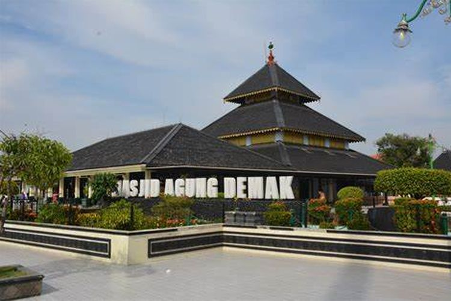
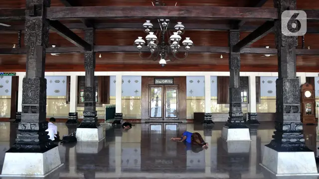

|  | Masjid Agung Demak termasuk ke dalam jajaran masjid tertua di Indonesia. Masjid ini dibangun pada abad ke-15 Masehi oleh Raden Patah dari Kerajaan Demak dan dibantu wali songo. Masjid ini terletak di Kampung Kauman, Kelurahan Bintoro, Kabupaten Demak, Jawa Tengah. Berdekatan dengan Alun-alun Demak, sehingga masjid ini mudah untuk ditemukan. Menurut sejumlah kisah atau cerita yang berkembang, Masjid Agung Demak dijadikan tempat oleh wali songo yang merupakan tokoh penyebar agama Islam di tanah Jawa untuk berkumpul. Hal inilah yang membuat Kabupaten Demak memperoleh julukan sebagai Kota Wali. Masjid yang didirikan oleh Raden Patah bersama dengan wali songo ini dibangun dengan bentuk dan gambaran laksana bulus yang merupakan candra sengkala memet bermakna sirno ilang kerthaning bumi. |
Jika dilihat dari sudut pandang filosofis bulus memberikan gambaran mengenai waktu atau tahun didirikannya Masjid Agung Demak yakni 1401 Saka. Bulus terdiri dari kepala bermakna 1, memiliki empat kaki bermakna 4, badan bulus berbentuk bulat dimaknai 0, dan ekornya bermakna 1. Selain itu juga ditemukan berbagai macam ornamen berbentuk bulus di dinding masjid. Hal itu membuktikan bahwa hewan bulus memang dijadikan sebagai simbol Masjid Agung Demak. Sementara dari segi arsitektur bangunan, Masjid Agung Demak menyimbolkan arsitektur bangunan bergaya tradisional Indonesia yang khas serta penuh makna. Meskipun dibangun dengan arsitektur tradisional dan sederhana, namun bangunan masjid mampu memberikan kesan mewah, megah, indah, anggun, dan berkarismatik. Bentuk atas masjid yang bersusun tiga berbentuk limas merupakan gambaran akidah Islam yakni Iman, Islam, dan Ihsan. Sedangkan empat tiang utama di masjid yang akrab disebut dengan saka atau tatal dibuat secara langsung oleh para wali songo. Lalu di sebelah barat laut oleh Sunan Bonang, sebelah barat daya oleh Sunan Gunung Jati, sebelah tenggara oleh Sunan Ampel, dan sebelah timur laut oleh Sunan Kalijaga. Terakhir bagian pintu masjid atau biasa disebut dengan nama Bledeg diyakini mampu menahan petir. Pintu ini dibuat oleh Ki Ageng Selo bertuliskan Candra Sengkala yang berbunyi Nogo Mulat Sarira Wani, bermakna tahun 1388 Saka atau 1466 Masehi. |
|
Terdapat Makam Raja di Dalamnya |
|
|
Masjid ini mempunyai bangunan-bangunan induk dan serambi. Bangunan induk memiliki empat tiang utama yang disebut saka guru. Salah satu dari tiang utama tersebut katanya berasal dari serpihan-serpihan kayu, sehingga dinamai saka tatal. Bangunan serambi merupakan bangunan terbuka. Di dalam lokasi kompleks Masjid Agung Demak, terdapat beberapa makam raja-raja Kesultanan Demak. Salah satu di antaranya yaitu Raden Patah yang merupakan raja pertama Kesultanan Demak dan para abdinya. Dalam cerita tradisional Mataram yang lebih populer menjelaskan bahwa Demak didirikan oleh Raden Patah, anak raja Majapahit terakhir. Ada kesimpulan bahwa nenek moyang para penguasa Demak tampaknya merupakan seorang pendatang Muslim asal Tiongkok yang pertama kali mendarat di Gresik dan kemudian menetap di Demak. Untuk lebih jelasnya, Anda bisa datang ke kompleks Masjid Agung Demak yang di dalamnya juga terdapat Museum Masjid Agung Demak. Terdapat pula berbagai hal mengenai riwayat Masjid Agung Demak yang bisa dipelajari pengunjung. |
|